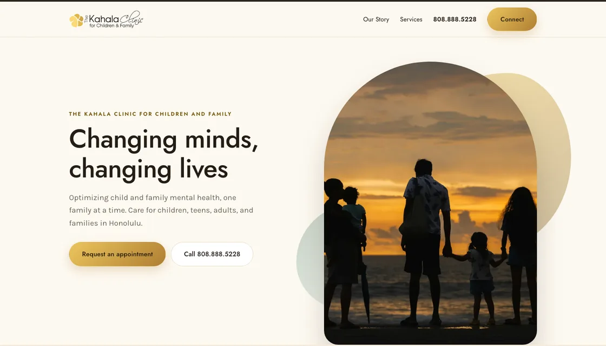

Pua
This one is built out of your own mark. The five petals in your logo become the shape language for the whole page, so photos sit inside soft arches, cards have generous rounded corners, and the gold runs as a gradient from light to deep instead of one flat color. The sunset photo sits in an arch with soft petal shapes behind it, and your location, hours, and insurance sit together in one long rounded bar underneath, so the three things people ask first are answered right away. Your mission sits beside the flower from your logo, and its petals drift together into place as you scroll down to it.
Pua means flower, and it is also the word for the children. For a practice named after a flower that takes care of kids, that felt right. This is the warmest of the three and the closest in spirit to what you have now, with shape and depth doing the work your current site asks color to do on its own.
Type and color
The headlines use a geometric rounded sans that echoes the lettering in your own logo, with a warm readable sans underneath. The colors are your cream, sand, and gold, with the gold as a two tone gradient pulled off the mark and a soft sage used sparingly.
The trade-off
The shapes carry the whole personality here, which ties this design closely to your logo. That is a strength while the mark stays as it is. It is also the friendliest of the three, which is right for families and may read as less formal than some of your referring physicians expect.